Inicio, Explorar, Perfil y qué módulos ves según tu rol.
NAVEGAR LA APP · INICIO
Pestaña Inicio1 de 3
Es la primera pestaña de la app: desde aquí llegas a tus servicios, a la emisora y al mapa del Campus.
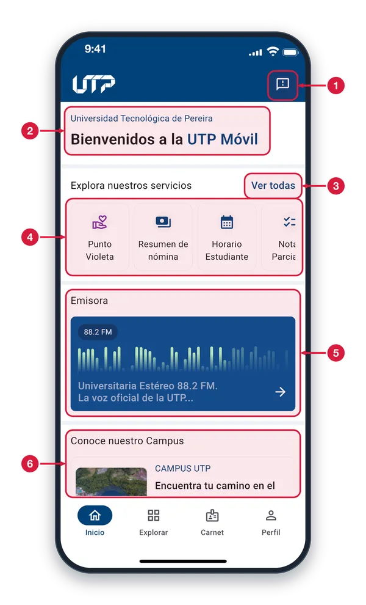
Sugerencias Toca este icono de la barra superior para calificar la app y dejar un comentario. Está en las cuatro pestañas principales: Inicio, Explorar, Carnet y Perfil.
Bienvenida Es el saludo de la app. Si aún no has iniciado sesión, debajo aparece un aviso con el enlace «Inicia sesión»; con la sesión iniciada solo ves este saludo.
Ver todas Te lleva a la pestaña Explorar, donde están todos los servicios disponibles para ti, agrupados por categoría.
Atajos a tus servicios Tarjetas con tus servicios principales (hasta seis). Desliza hacia la izquierda para ver más y toca una para abrir ese servicio. Cada tipo de usuario ve los suyos.
Emisora Tarjeta de la emisora universitaria. Tócala para abrir la pantalla Emisora y escucharla. Los detalles están en la siguiente pantalla.
Conoce nuestro Campus Al desplazarte hacia abajo llegas a la tarjeta del Campus. Tócala para abrir el mapa interactivo de la universidad.
Inicio: la emisora2 de 3
Al desplazarte hacia abajo en Inicio aparece la emisora de la universidad. Tócala para escucharla.
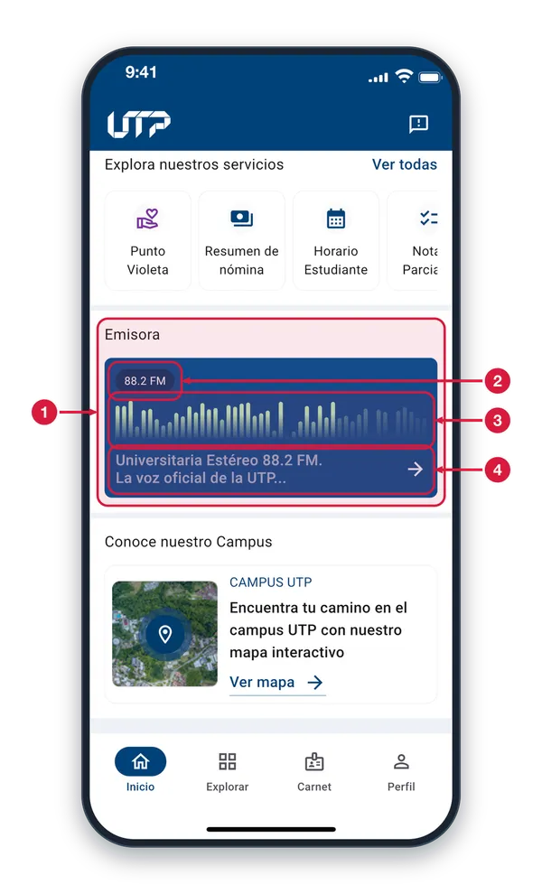
Tarjeta de la emisora Toca cualquier parte de la tarjeta para abrir la pantalla Emisora, donde puedes reproducir y pausar la emisora universitaria.
Frecuencia Indica en qué frecuencia transmite la emisora: 88.2 FM.
Barras en movimiento Es solo un adorno animado: las barras se mueven solas y no indican si la emisora está sonando ni su volumen.
Nombre y flecha Muestra el nombre de la emisora. La flecha indica que, al tocar la tarjeta, se abre otra pantalla.
Inicio: el Campus3 de 3
Más abajo en Inicio está la tarjeta del Campus, que te lleva al mapa interactivo de la universidad.
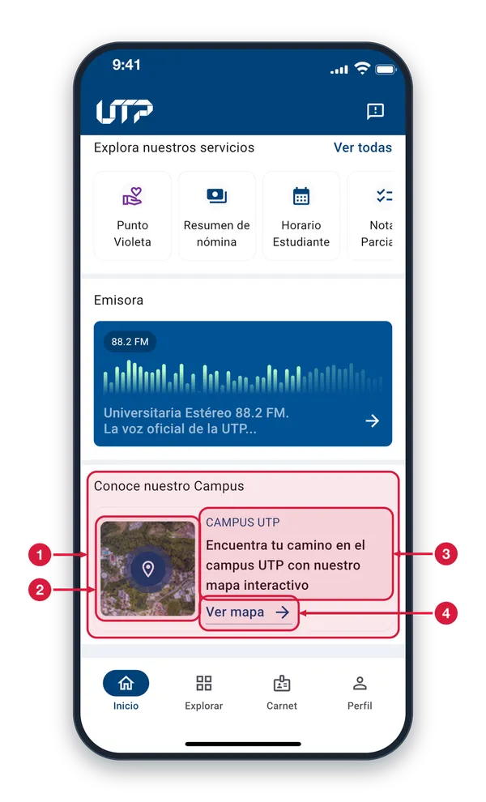
Tarjeta del Campus Toca cualquier parte de la tarjeta para abrir Campus, la sección con el mapa interactivo de la UTP.
Vista previa del mapa Imagen del Campus con un pin de ubicación; sirve de vista previa. Tocarla también abre Campus.
Descripción Texto de la tarjeta: el nombre «CAMPUS UTP» y una frase que te invita a encontrar tu camino con el mapa interactivo.
Ver mapa Enlace que abre Campus. Allí puedes buscar y explorar el campus de la universidad en un mapa.
NAVEGAR LA APP · EXPLORAR
Pestaña Explorar1 de 3
Aquí están todos los servicios disponibles para ti, ordenados por categoría. Busca uno o tócalo para abrirlo.
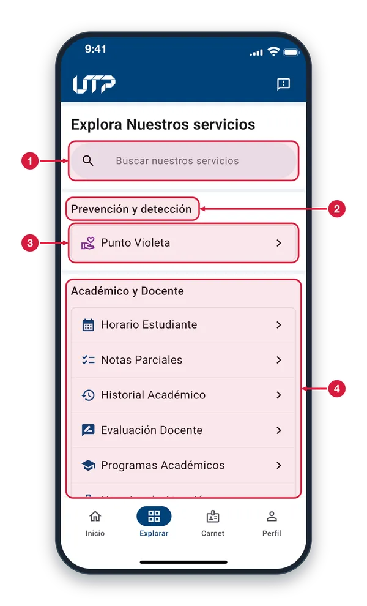
Buscador de servicios Escribe parte del nombre de un servicio para filtrar la lista. No importan las mayúsculas ni las tildes.
Categoría Cada título reúne los servicios de un mismo tema. Los que ves dependen de tu tipo de usuario, por eso tu lista puede ser distinta a la de otra persona.
Fila de servicio Cada fila muestra el icono y el nombre de un servicio. Tócala para abrirlo. Todas las filas funcionan igual.
Más servicios La lista continúa hacia abajo: desplázate para ver los demás servicios y categorías disponibles para ti.
Buscar un servicio2 de 3
Al escribir en el buscador, la lista se reduce a los servicios cuyo nombre contiene lo que escribiste.
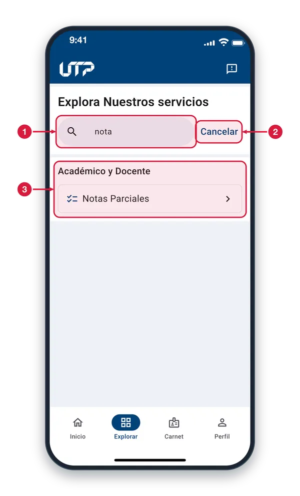
Texto de búsqueda Escribe parte del nombre del servicio. La lista se actualiza sola mientras escribes, sin importar mayúsculas ni tildes.
Cancelar Aparece cuando hay texto en el buscador. Tócalo para borrar lo escrito, cerrar el teclado y volver a ver todos los servicios.
Resultados Solo quedan los servicios que coinciden, dentro de su categoría. Toca la fila del servicio para abrirlo.
Búsqueda sin resultados3 de 3
Si lo que escribes no coincide con ningún servicio, la lista queda vacía y aparece el aviso «No hay resultados».
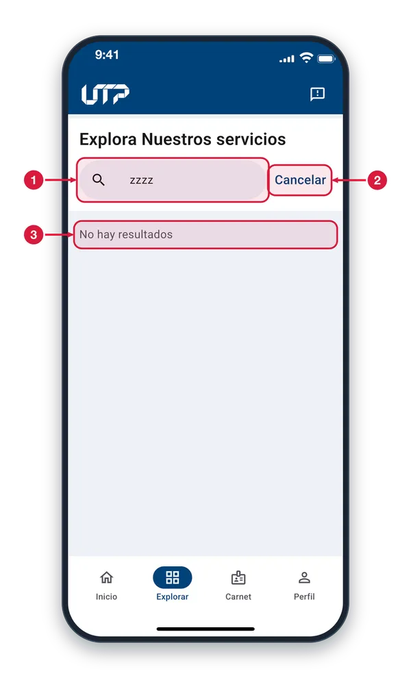
Texto sin coincidencias Revisa que esté bien escrito. Tal vez ese servicio no esté disponible para tu tipo de usuario. Cambia el texto para buscar de nuevo.
Cancelar Borra el texto y devuelve la lista completa de servicios.
No hay resultados Significa que ningún servicio de tu lista contiene ese texto. Corrige lo escrito o toca Cancelar para ver todo.
NAVEGAR LA APP · PERFIL
Pestaña Perfil1 de 4
Con la sesión iniciada, aquí ves tus datos, tu siguiente clase y tu resumen académico. Desliza para ver más.
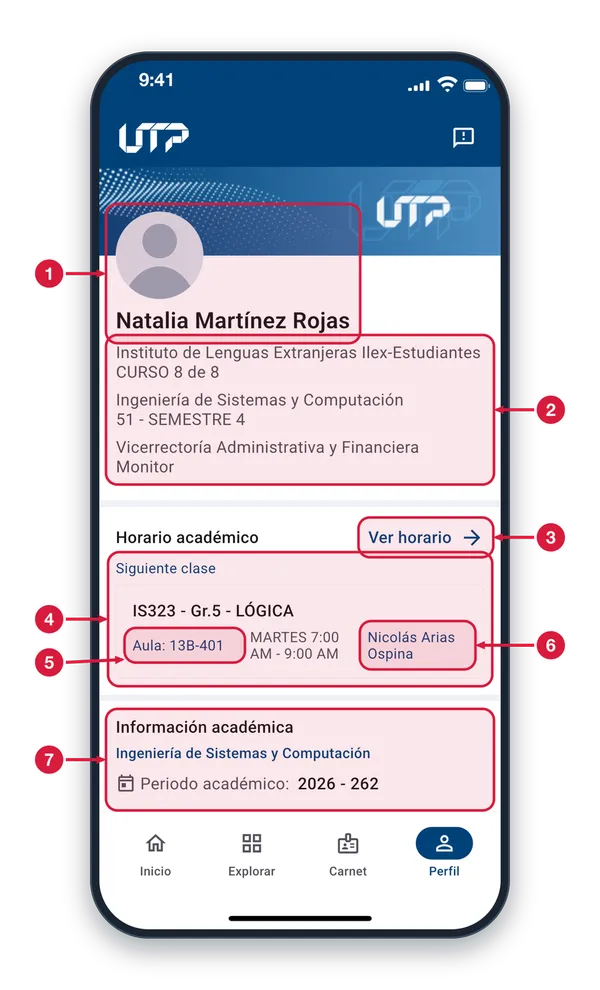
Foto y nombre Tu foto y tu nombre completo, en la parte superior de tu perfil.
Tus vinculaciones Cada vinculación muestra tu programa o dependencia y, debajo, tu semestre, curso o cargo. Si tienes más de una, aparecen todas.
Ver horario Abre tu horario. Si eres estudiante se abre Horario; si eres docente, Horario y Asistencia.
Siguiente clase Resume tu próxima clase: materia y grupo, aula, día y hora, y docente. Solo aparece si tu perfil tiene horario y hay una clase por mostrar.
Aula Toca el aula para abrir Campus y ubicar ese salón en el mapa. Si la clase no tiene aula asignada, no se puede tocar.
Docente o Enviar correo Toca el nombre del docente para escribirle desde tu app de correo. Si eres docente dice «Enviar correo» y escribes a tus estudiantes. Sin correos, la app lo avisa.
Información académica Resumen de tu avance académico: periodo, créditos y progreso, con accesos a tu historial y a tus notas. Continúa más abajo.
Información académica2 de 4
Más abajo en Perfil está el resumen de tu avance y los accesos directos a tu historial y a tus notas.
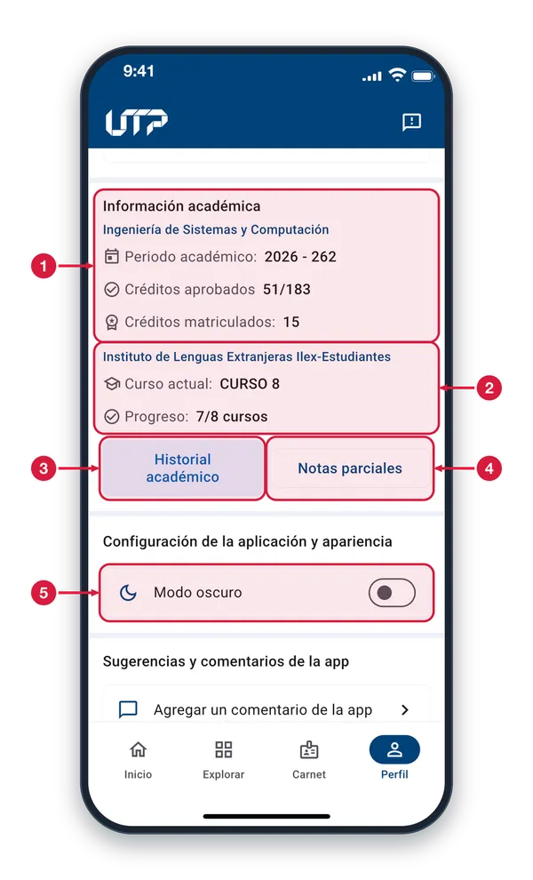
Resumen por programa Muestra el periodo académico, los créditos aprobados frente al total de tu plan y, si estás matriculado, los créditos que matriculaste en el periodo.
Varios programas Si tienes más de un programa, cada uno tiene su bloque con su nombre. En el de idiomas (ILEX) ves tu curso actual y los cursos aprobados.
Historial académico Abre Historial Académico: tus programas y el detalle de las materias de cada periodo cursado.
Notas parciales Abre Notas Parciales: tus materias con sus notas parciales, con un buscador para encontrarlas.
Modo oscuro Toca la fila o el interruptor para pasar entre el tema claro y el oscuro. El cambio se aplica al instante y se guarda para la próxima vez.
Comentarios, privacidad y salida3 de 4
Al final de Perfil envías comentarios, consultas la política de privacidad y cierras tu sesión.
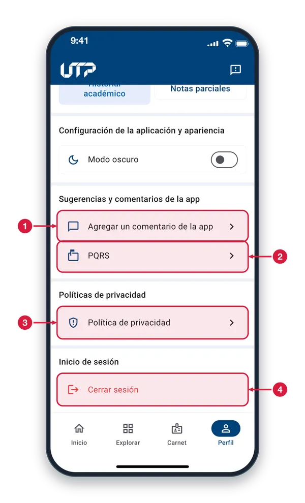
Agregar un comentario Abre Sugerencias: califica la app de 1 a 5 estrellas y escribe un comentario opcional para enviarlo a la universidad.
PQRS Abre PQRS UTP, la página de la universidad para presentar peticiones, quejas, reclamos y sugerencias, dentro de la app.
Política de privacidad Abre el aviso de privacidad de la universidad, dentro de la app, para que lo leas cuando quieras.
Cerrar sesión Toca para salir de tu cuenta. Antes, la app te pide confirmar en un aviso. Está en la sección «Inicio de sesión».
Aviso de cierre de sesión4 de 4
Al tocar «Cerrar sesión» en Perfil, la app te pide confirmar antes de salir de tu cuenta.
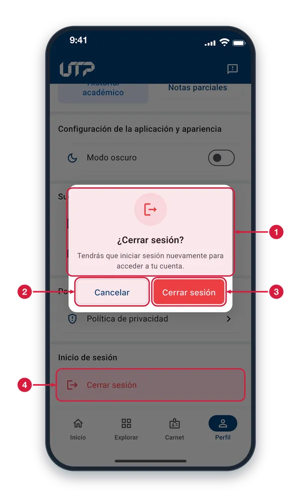
Mensaje de confirmación Pregunta si quieres cerrar sesión y te recuerda que tendrás que iniciar sesión de nuevo para acceder a tu cuenta.
Cancelar Cierra el aviso y sigues en Perfil con la sesión abierta. Tocar fuera del aviso hace lo mismo.
Cerrar sesión Confirma la salida: aparece «Cerrando sesión…», se cierra tu sesión y la app queda como para un visitante, sin tus datos.
Botón del Perfil Es el botón de Perfil que abre este aviso, en la sección «Inicio de sesión», al final de la pantalla.
NAVEGAR LA APP · CUENTA DE DOCENTE
Perfil del docente1 de 3
Muestra tus datos, tu siguiente clase y un resumen académico. Entras con la pestaña «Perfil» de la barra inferior.
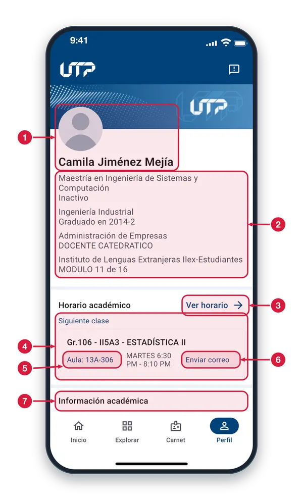
Foto y nombre Tu foto de perfil (si no hay una, aparece tu inicial) y tu nombre completo. Es la presentación de tu cuenta.
Tus vinculaciones Un par de líneas por cada vínculo que tienes con la universidad: arriba, el programa o la dependencia; debajo, su complemento (por ejemplo, el estado o el cargo).
Ver horario Abre «Horario y Asistencia», con tus clases de la semana y el registro de asistencia de cada una.
Siguiente clase Resume tu próxima clase: grupo, código y nombre de la materia. En la fila de abajo van el salón, el día y la hora, y el acceso para escribirle a tus estudiantes.
Salón de la clase Toca el salón para ver dónde queda en el mapa del Campus. Si la clase no tiene salón asignado, dice «Sin asignar» y no se puede tocar.
Enviar correo Abre tu aplicación de correo con los estudiantes de la clase en copia oculta y la materia en el asunto. Si no hay correos o no se puede abrir, verás un aviso.
Información académica Si tienes programas académicos asociados a tu cuenta, aquí ves un resumen de cada uno. Desplázate hacia abajo para verlo y para abrir «Historial académico» y «Notas parciales».
Explorar: módulos del docente2 de 3
Explorar reúne los módulos disponibles para tu perfil. Entras con la pestaña «Explorar» de la barra inferior.
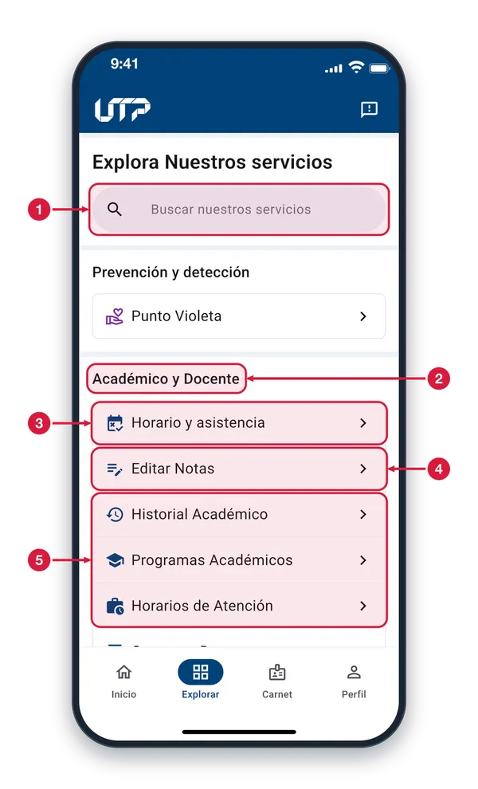
Buscador de módulos Escribe parte del nombre de un módulo y la lista se filtra mientras escribes, sin importar mayúsculas ni tildes. Toca «Cancelar» para borrar la búsqueda.
Grupo de módulos Los módulos se organizan por tema. Las opciones que ves dependen de tu perfil; este grupo reúne las de tu trabajo académico y docente.
Horario y asistencia Toca la fila para abrir «Horario y Asistencia»: tus clases de la semana y, en cada una, el registro de asistencia de tus estudiantes.
Editar Notas Toca la fila para abrir «Gestionar Notas»: eliges uno de tus cursos y puedes ingresar las notas o editar las actividades de evaluación.
Otros módulos del grupo Historial Académico, Programas Académicos, Horarios de Atención y Concurso Docente se abren igual: toca la fila del módulo que necesites.
Explorar: más módulos3 de 3
Al desplazar Explorar hacia abajo siguen los grupos de gestión administrativa y de vida universitaria.
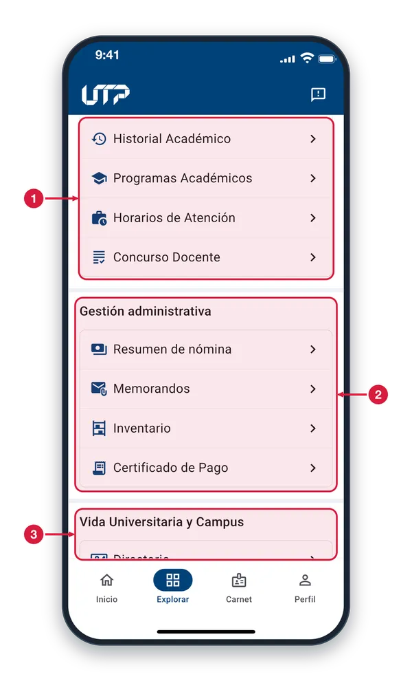
Módulos académicos Continúa el grupo «Académico y Docente»: Historial Académico, Programas Académicos, Horarios de Atención y Concurso Docente. Toca una fila para abrir el módulo.
Gestión administrativa Reúne los módulos administrativos disponibles para ti: Resumen de nómina, Memorandos, Inventario y Certificado de Pago. Toca una fila para abrirlo.
Vida Universitaria y Campus Grupo de vida universitaria y campus; desde aquí abres, por ejemplo, el Directorio. Sigue desplazándote para ver el resto de sus módulos.
¿Qué módulos puedo ver al loguearme en la app?
Módulo
AdministrativoAdmin.
Docente
EstudianteEstud.
EgresadoEgres.
Eventos
✓
✓
✓
✓
Carnet
✓
✓
✓
✓
Punto Violeta
✓
✓
✓
✓
Mis Bonos (con beca)
✕
✕
✓
✕
Memorandos
✓
✓
✕
✕
Inventarios
✓
✓
✕
✕
Incapacidades
✓
✓
✕
✕
Resumen de nómina
✓
✓
✕
✕
Certificado de pago
✓
✓
✕
✕
Horario (estudiante)
✕
✕
✓
✕
Horario y asistencia
✓
✓
✕
✕
Editar notas
✓
✓
✕
✕
Notas parciales
✕
✕
✓
✕
Historial académico
✕
✕
✓
✓
Evaluación docente
✕
✕
✓
✕
Bitácora
✕
✕
✓
✕
Estos módulos los podrás visualizar en el botón de Explorar y Perfil.